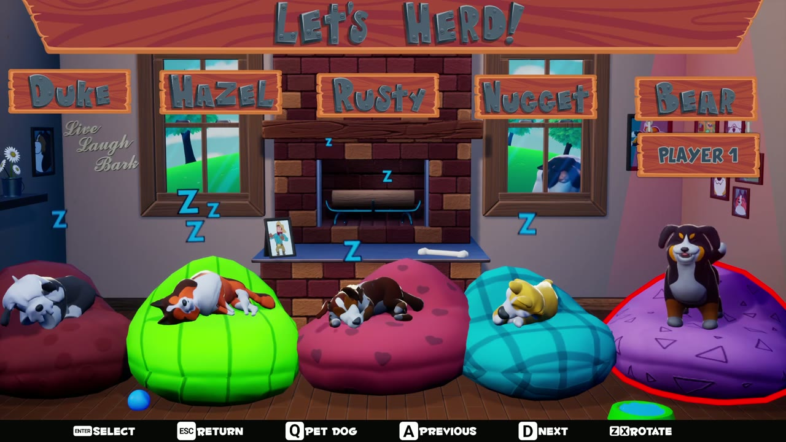
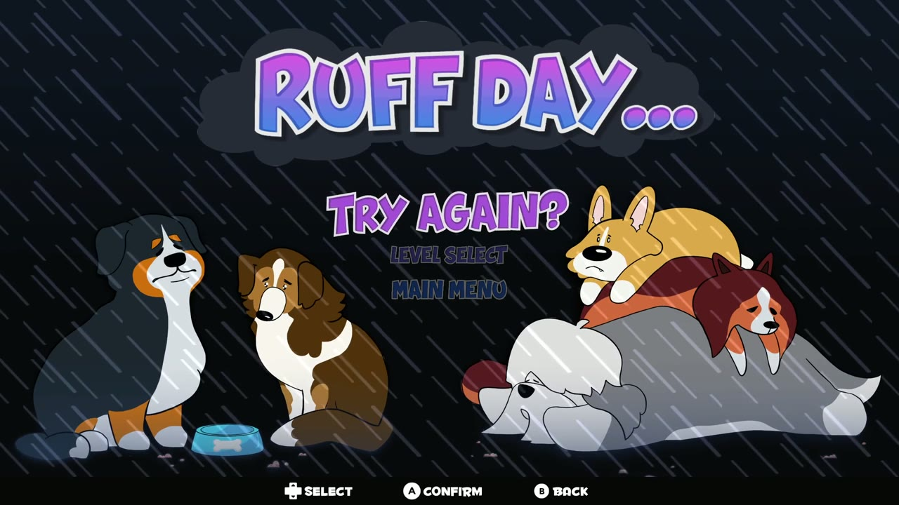
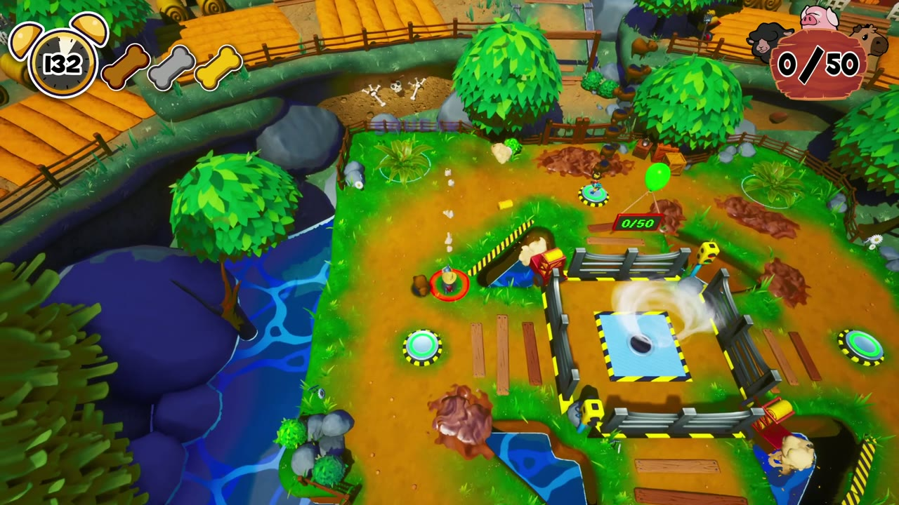
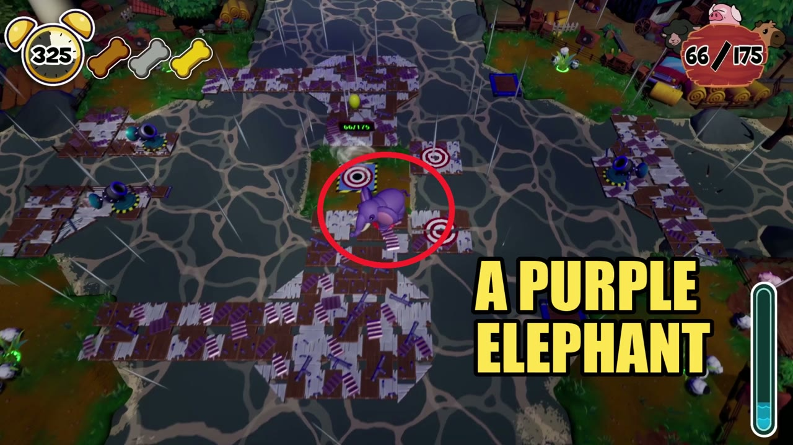
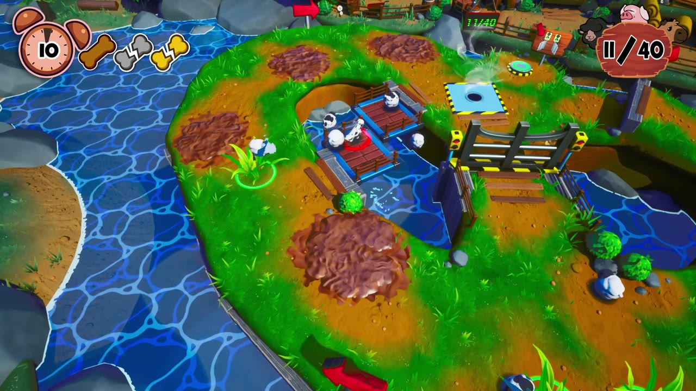

Have You Herd? Review: I made all the dogs sad

Tideturners made a dog herding game called Have You Herd? It has been on Steam since November 24, 2026. Woolbeard the bad pirate sheep has set the critters loose, and Cowboy Maloy and his pups Duke, Hazel, Rusty, Nugget and Bear have to round them up. You bark sheep, pigs and capybaras into pens, dodge traps, get ranked on every stage and unlock dog costumes. You can play solo or in local co-op with up to 4 players. Tideturners sent me a key, and I played it solo on a live stream the night before launch.
Before I herded a single sheep, I found the button to pet the dog, so I pet every dog in the kennel. "10 out of 10. Everybody game of the year." I picked the one that looks like the dog from The Little Mermaid.

Then I tried herding. "I've dropped 30 sheep into water." When you fail a level, the dogs get sad, and the game shows you all of them sitting in the rain under "RUFF DAY... TRY AGAIN?" "Oh, no, I made all the dogs sad." It's the saddest fail screen I've seen, and I still kept failing. "I don't want to make dogs sad even fake ones."

I spent the first half of the stream calling Cowboy Maloy lazy, since his dogs do all the work. Then he started showing up in the levels to help. On a later capybara level I begged him: "Stack them on your head!" In Terminal Shock he walked around with a tower of sheep on his head, every sheep on the map. "The man, the man has all the sheep." After that he zipped around herding by himself, and my dog finally got to lay around and be happy. He is the only reason I beat it.

By the late levels the animals got strange. Small elephants turned up in the Sunken Skunk level: "Oh, there are elephants in the game." A big purple elephant walked across Farmageddon, and a llama there kicked my butt.

It's a hard game, the capybaras are the worst of it, and "I don't buy into the story that much." But the dogs carry it: "Dogs across the board, 10 out of 10, love them all." Play solo if you want to suffer, or drag up to three friends in. Store page: Steam page for Have You Herd?
More weird indie games: My Cat Scattered Games, How to Fish and Gnome.